Personagens
As personagens foram pensadas para transmitir personalidade através da pose, expressão, roupa e paleta cromática.
Cada figura contribui para o ambiente visual da história e ajuda a reforçar o tom leve e narrativo do projeto.
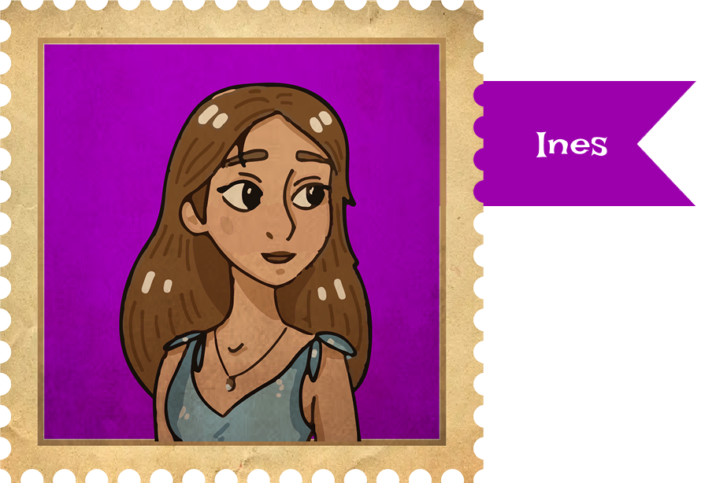
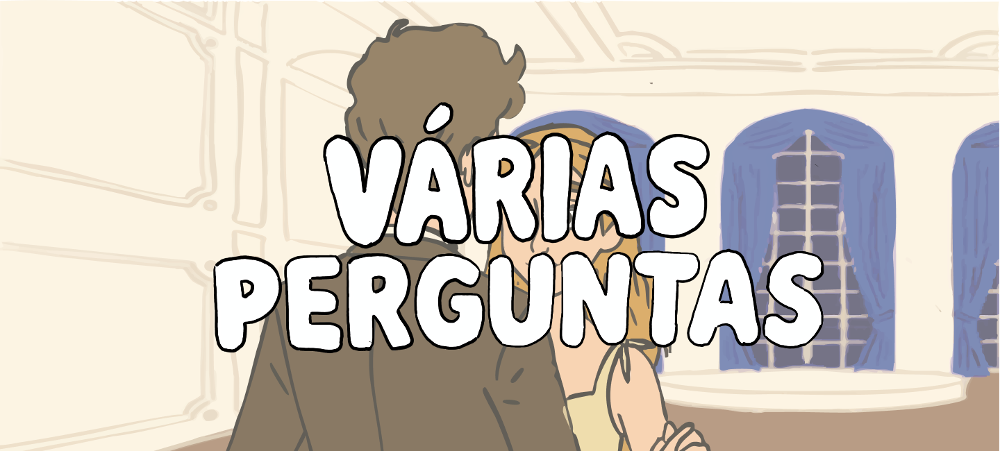
Projeto de animação e ilustração desenvolvido a partir de uma narrativa visual com personagens, cenários e momentos de interação.
O objetivo foi criar uma linguagem gráfica simples, expressiva e coerente, explorando a relação entre personagem, ambiente e movimento.
A proposta parte de uma abordagem visual próxima da ilustração infantil, combinando cores suaves, formas orgânicas e personagens com características distintas.
Ao longo do projeto foram desenvolvidos estudos de personagem, cenários e elementos visuais que ajudam a construir o universo narrativo da animação.
As personagens foram pensadas para transmitir personalidade através da pose, expressão, roupa e paleta cromática.
Cada figura contribui para o ambiente visual da história e ajuda a reforçar o tom leve e narrativo do projeto.

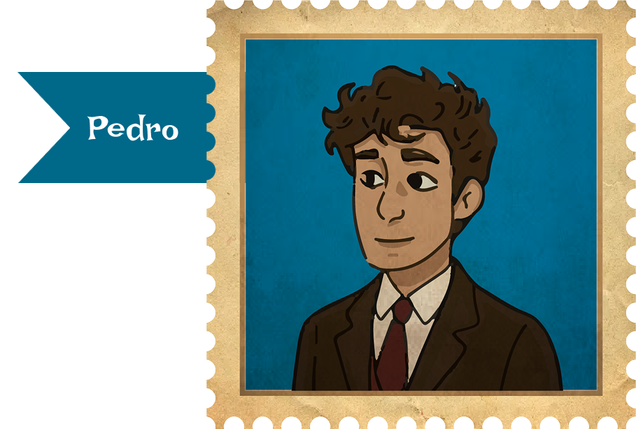
Inês e Pedro representam os protagonistas principais do projeto, cada um com uma identidade visual própria e facilmente reconhecível.
O contraste entre as personagens permite criar uma dinâmica visual interessante e reforçar a leitura da narrativa.
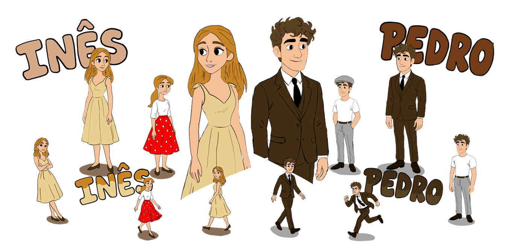
Os cenários foram desenvolvidos para enquadrar a ação e reforçar a atmosfera visual da história. Cada ambiente foi desenhado com uma linguagem simples, clara e ilustrativa.
A escolha das cores, texturas e formas procura criar espaços reconhecíveis, mas ao mesmo tempo próximos de um universo gráfico mais imaginativo.
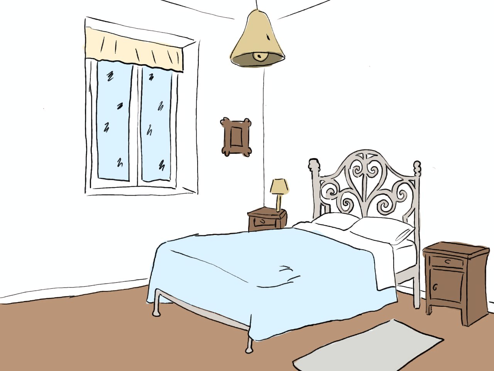
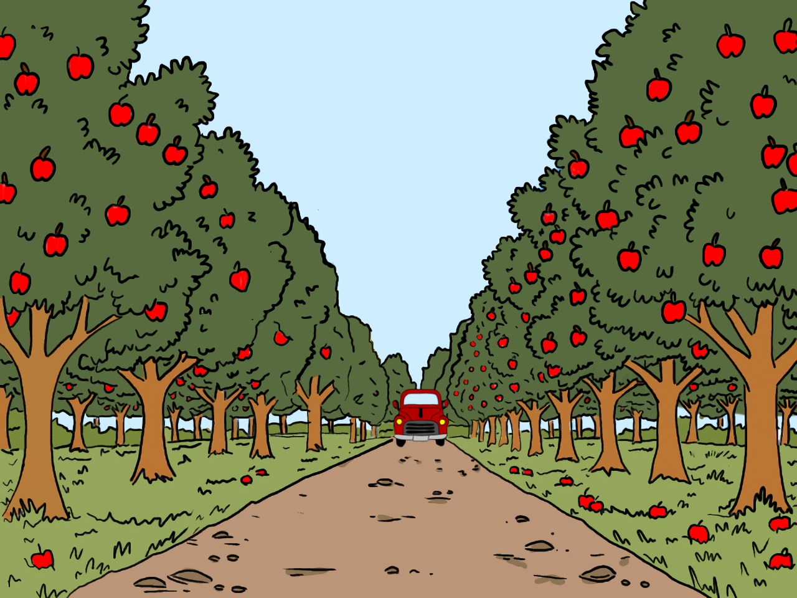
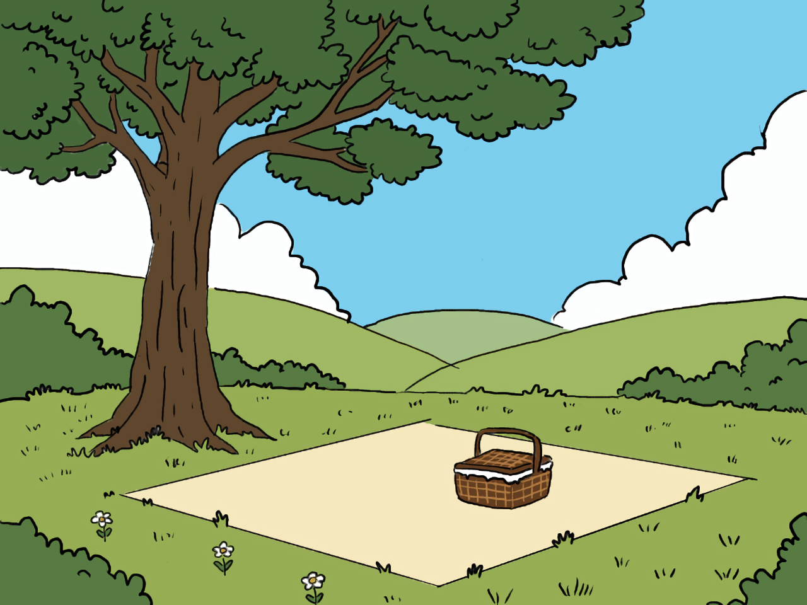
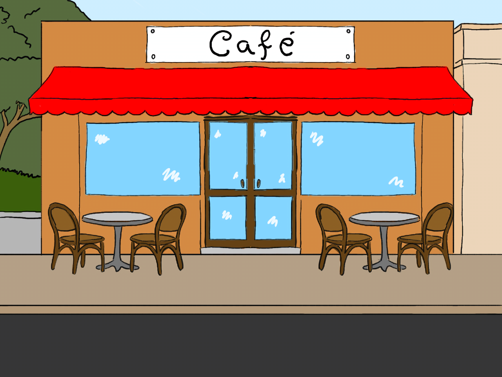
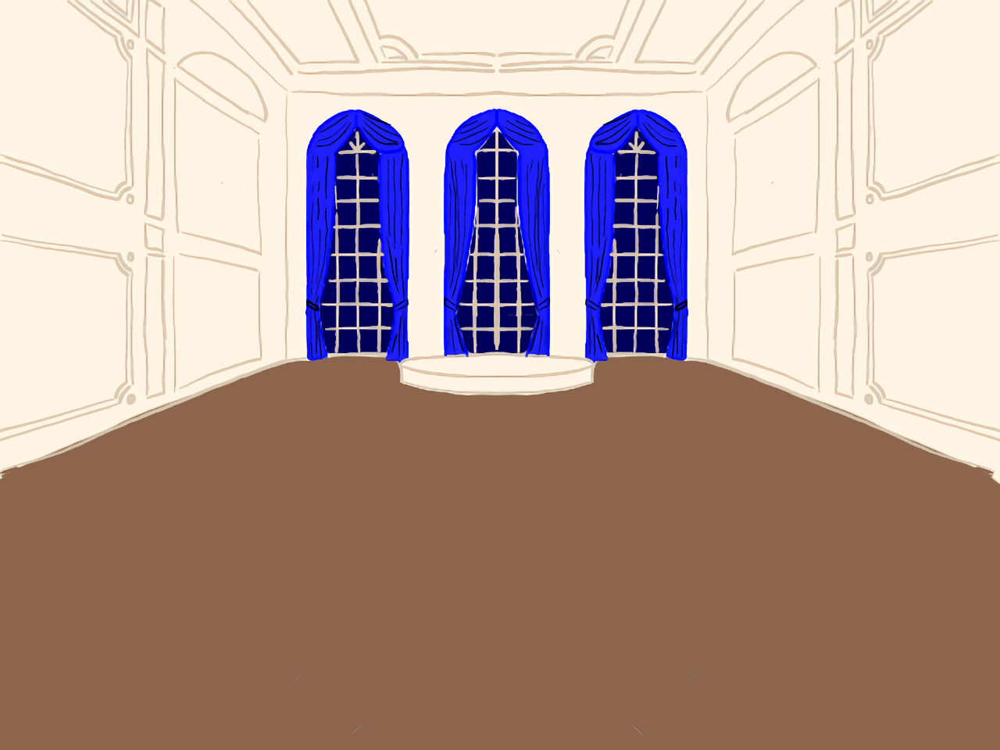
A fase de animação permitiu dar movimento às personagens e aos elementos visuais criados anteriormente. O processo passou pela organização das cenas, composição dos planos e testes de ritmo.
O resultado final combina ilustração, narrativa e movimento, criando uma experiência visual simples, expressiva e coerente com o conceito inicial.
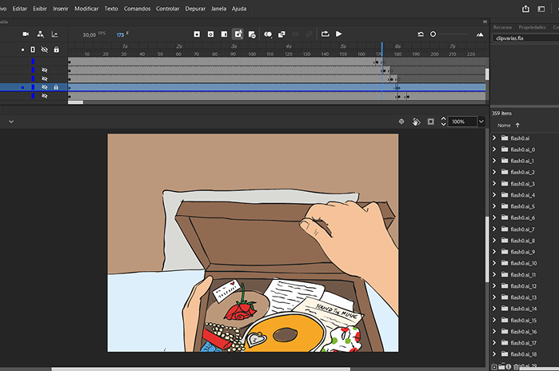
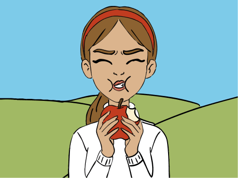
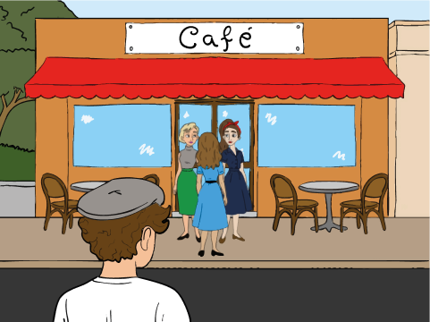
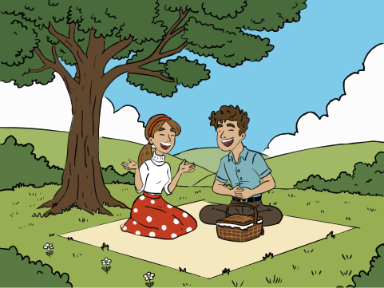
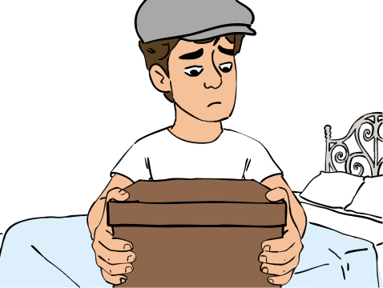
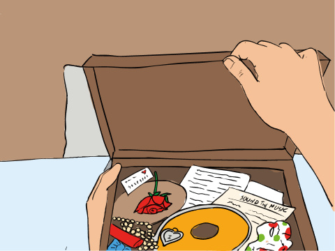
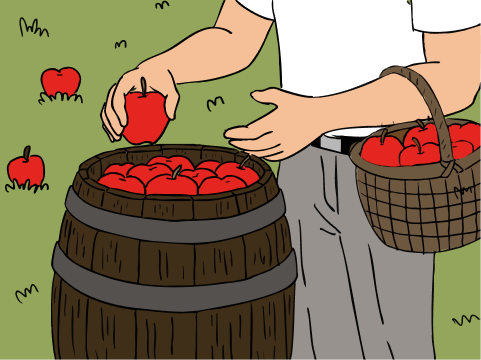